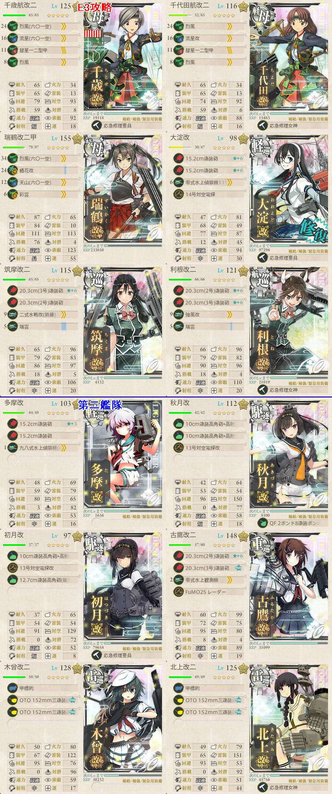

【艦これ】捷号決戦！邀撃、レイテ沖海戦(前篇) E3
2017年秋イベント E3（丙作戦）
構成
ゲージ1（戦力）
ABFG
第一: Pola、古鷹、筑摩、利根、初月、金剛
第二: 高雄、北上、雪風、Верный、朝霜、多摩
開幕潜水艦のため、先制爆雷を1～2隻用意
基地航空隊は陸攻をボスに集中
- 敵航空戦力を潰してくれるため、少量の水爆/水戦でも制空権が確保できる
ゲージ2（輸送）
輸送連合
BDEHJ
第一: 筑摩、利根、如月、文月、睦月、浦波
第二: 多摩、熊野（航巡）、鈴谷（航巡）、Верный、朝霜、雪風
TP = 8x10（大発動艇） + 5x3（ドラム缶） + 4x4（航巡） + 2x1（軽巡） + 5x7（駆逐）
= 80 + 15 + 16 + 2 + 35
= 148
A勝利時: 148x0.7 = 103.6
B, Eマスに対して道中支援があると安定する
Dマス潜水艦のため、先制爆雷を1～2隻用意
航空隊はゲージ1同様、陸攻をボスに集中する
ゲージ3（戦力）
機動部隊
OMPRS
小沢艦隊6隻を含む編成
第一: 千歳、千代田、瑞鶴、大淀、筑摩、利根
第二: 多摩、秋月、初月、古鷹、木曾、北上
制空値は421～450程度
基地航空隊は陸戦1＋陸攻3でボス集中

出撃ログ（丙）
ゲージ1
| 回数 | 編成 | ルート | 戦果 | |
|---|---|---|---|---|
| 1 | 第一 | Pola 金剛 筑摩 利根 古鷹 初月 | ABCFG | S勝利（初春） |
| 第二 | 高雄 北上 雪風 Верный 朝霜 多摩 | |||
| 2 | 第一 | Pola 金剛 筑摩 利根 古鷹 初月 | ABCFG | S勝利（五十鈴） |
| 第二 | 高雄 北上 雪風 Верный 朝霜 多摩 | |||
| 3 | 第一 | Pola 金剛 筑摩 利根 古鷹 初月 | ABCFG | S勝利（雷） ゲージ破壊 |
| 第二 | 高雄 北上 雪風 Верный 朝霜 多摩 | |||
ゲージ2
| 回数 | 編成 | ルート | 戦果 | |
|---|---|---|---|---|
| 1 | 第一 | 筑摩 利根 如月 文月 睦月 浦波 | B | 朝霜大破 |
| 第二 | 多摩 熊野 鈴谷 Верный 朝霜 雪風 | |||
| 2 | 第一 | 筑摩 利根 如月 文月 睦月 浦波 | BDEHJ | S勝利（矢矧） TP148 |
| 第二 | 多摩 熊野 鈴谷 Верный 朝霜 雪風 | |||
| 3 | 第一 | 筑摩 利根 如月 文月 睦月 浦波 | BDEHJ | S勝利（能代） TP148 |
| 第二 | 多摩 熊野 鈴谷 Верный 朝霜 雪風 | |||
| 4 | 第一 | 筑摩 利根 如月 文月 睦月 浦波 | BDEHJ | S勝利（卯月） TP148 |
| 第二 | 多摩 熊野 鈴谷 Верный 朝霜 雪風 | |||
| 5 | 第一 | 筑摩 利根 如月 文月 睦月 浦波 | BDE | 朝霜大破 |
| 第二 | 多摩 熊野 鈴谷 Верный 朝霜 雪風 | |||
| 6 | 第一 | 筑摩 利根 如月 文月 睦月 浦波 | BDEHJ | S勝利（長門） ゲージ破壊 |
| 第二 | 多摩 熊野 鈴谷 Верный 朝霜 雪風 | |||
ゲージ3
| 回数 | 編成 | ルート | 戦果 | |
|---|---|---|---|---|
| 1 | 第一 | 千歳 千代田 瑞鶴 大淀 筑摩 利根 | OMPRS | S勝利（蒼龍） |
| 第二 | 多摩 秋月 初月 古鷹 木曾 北上 | |||
| 2 | 第一 | 千歳 千代田 瑞鶴 大淀 筑摩 利根 | OMPRS | S勝利（赤城） |
| 第二 | 多摩 秋月 初月 古鷹 木曾 北上 | |||
| 3 | 第一 | 千歳 千代田 瑞鶴 大淀 筑摩 利根 | OMPRS | S勝利（瑞鶴） |
| 第二 | 多摩 秋月 初月 古鷹 木曾 北上 | |||
| 4 | 第一 | 千歳 千代田 瑞鶴 大淀 筑摩 利根 | OMPRS | S勝利（飛鷹） ゲージ破壊 |
| 第二 | 多摩 秋月 初月 古鷹 木曾 北上 | |||
伊400掘り
| 回数 | 編成 | ルート | 戦果 | |
|---|---|---|---|---|
| 1 | 第一 | 千歳 千代田 瑞鶴 大淀 筑摩 利根 | OMPRS | S勝利（比叡） |
| 第二 | 多摩 秋月 初月 古鷹 木曾 北上 | |||
| 2 | 第一 | 千歳 千代田 瑞鶴 大淀 筑摩 利根 | OMPRS | S勝利（三隈） |
| 第二 | 多摩 秋月 初月 古鷹 木曾 北上 | |||
| 3 | 第一 | 千歳 千代田 瑞鶴 大淀 筑摩 利根 | OMPRS | S勝利（榛名） |
| 第二 | 多摩 秋月 初月 古鷹 木曾 北上 | |||
| 4 | 第一 | 千歳 千代田 瑞鶴 大淀 筑摩 利根 | OMPRS | S勝利（松輪） |
| 第二 | 多摩 秋月 初月 古鷹 木曾 北上 | |||
| 5 | 第一 | 千歳 千代田 瑞鶴 大淀 筑摩 利根 | OMPRS | S勝利（伊400） |
| 第二 | 多摩 秋月 初月 古鷹 木曾 北上 | |||
敵編成
| マス | 敵航空戦力 | 敵潜水艦 | 備考 |
|---|---|---|---|
| A | なし | あり | 潜水艦x4 ラストダンス時旗艦が赤くなる？ |
| B | なし | なし | 軽巡1 駆逐5 警戒陣or単縦陣 |
| なし | なし | ラストダンス時？ 軽巡1 ツ級1 駆逐4 単縦陣 | |
| C | あり | なし | 空襲戦 |
| D | なし | あり | 潜水艦x4 |
| E | なし | なし | 軽巡1 ネ級1 ツ級1 駆逐3 単縦陣 |
| F | あり | なし | 空襲戦 |
| G | あり | なし | ゲージ1ボス 連合艦隊 防空棲姫 軽空母1 戦艦1 駆逐3 + 軽巡1 駆逐5 |
| J | なし | なし | ゲージ2ボス 連合艦隊 古姫 ツ級1 紫駆逐2 駆逐2 + 軽巡1 駆逐5 |
| O | あり | なし | 空襲戦 |
| P | なし | なし | 軽巡1 重巡2 ツ級1 駆逐2 単縦陣 |
| R | あり | なし | 連合艦隊 ヲ級1 軽空母3 ネ級2 + 軽巡1 駆逐5 416～450で優勢 |
| S | あり | なし | ボス 連合艦隊 空母おばさん1 ヲ級2 戦艦1 ネ級2 + 軽巡1 駆逐5 航空隊+403～439で制空確保 |